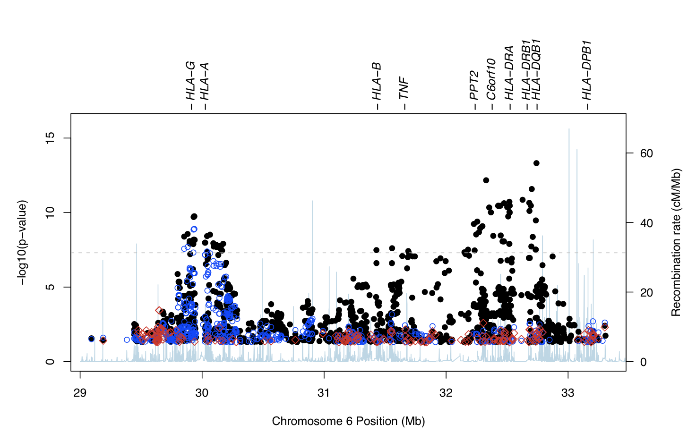
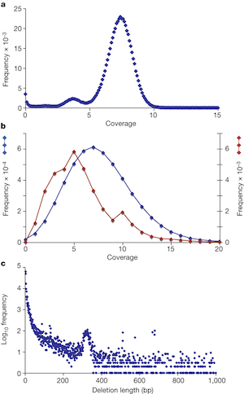

Welcome to the Shen Lab. We study human biology and diseases using quantitative approaches. We are interested in two broad areas: genetics of cancer and developmental diseases, and dynamics of immune systems. We use high-throughput genomic technologies, develop computational methods based on probabilistic models, and analyze large-scale genomic data to test biological hypotheses and formulate new ones.
|  |  |